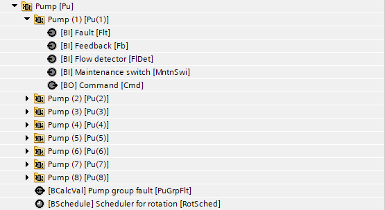
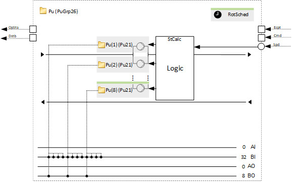
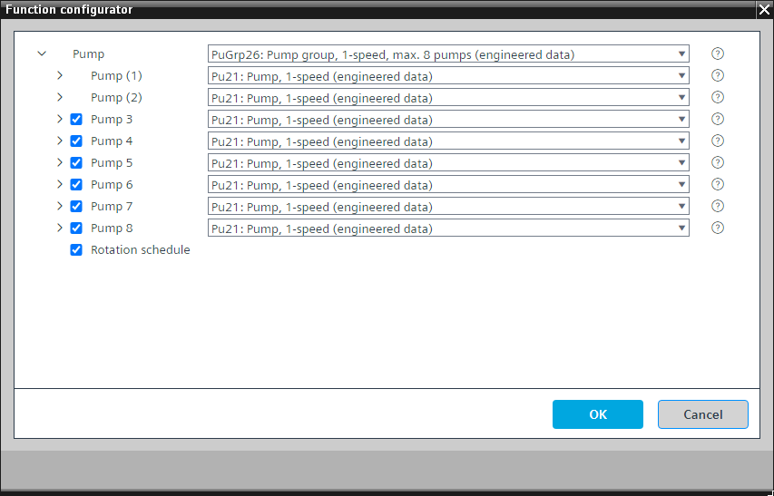

[PuGrp26] 泵组，1 速，最大8 个泵
Program block, name / node subtype: [PuGrp26] Pump group, 1-speed, max. 8 pumps
Library hierarchy: Universal equipment
Family: Pu
项目树 | 图表 |
|---|---|
|
 |  |
Configurator


程序块存储在没有 I/Os. 的库中 使用auto-create and auto-connect函数创建 I/Os 和 /or 将它们连接到接口块，例如 R_A、CMD_B。或者，从包含库中预定义 I/Os 的文件夹中取出 I/Os，并从工厂中取出 /or，并将它们连接到接口块。
控制最多由 8 个 1 速泵组成的泵组。
% 中的输入信号是在外部计算的，并且必须具有代表阶段的离散值。每个新阶段都会激活一个额外的泵。
程序逻辑（功能块 ROT_8）测量泵的运行时间，并在泵组打开时以较少的运行时间打开泵。当要打开下一个泵时，逻辑使用这些运行时间作为选择下一个泵的标准。
如果一台泵出现问题，程序会启动另一台泵（如果可用）。如果所有泵均出现问题，则计算值对象“泵组故障”会生成警报。
该程序块具有以下可选功能：
Option: Pump 3...Pump 8
泵预设为 Pu21 类型。我们建议不要将它们更改为替代品。
Option: Rotation schedule
可以设置强制净旋转的短脉冲，例如每周二上午 5:15 至凌晨 5:16。
姓名 | 描述 | 类型 | 报警/通知类 | 趋势/类型 |
|---|---|---|---|---|
Pu(1) | Pump (1) | N/A | N/A | |
Pu(2) | Pump (2) | N/A | N/A |
姓名 | 描述 | 类型 | 报警/通知类 | 趋势/类型 |
|---|---|---|---|---|
RotSched | Rotation schedule | BSchedule: Binary scheduler | N/A | N/A |
Pu(3) | Pump (3) | N/A | N/A | |
Pu(4) | Pump (4) | N/A | N/A | |
Pu(5) | Pump (5) | N/A | N/A | |
Pu(6) | Pump (6) | N/A | N/A | |
Pu(7) | Pump (7) | N/A | N/A | |
Pu(8) | Pump (8) | N/A | N/A |